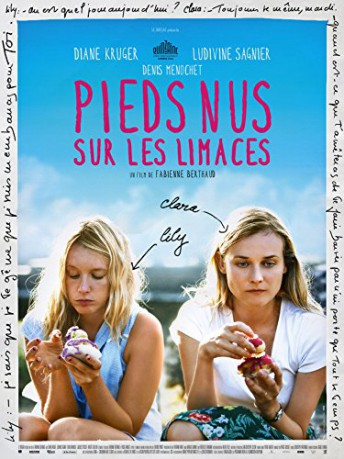

#8179 Barfuß auf Nacktschnecken
 
 IMDB-Wertung: 6.2 / 10
IMDB-Wertung: 6.2 / 10  Metascore: 0
Metascore: 0 
Clara is happily married to a promising lawyer and lives in Paris. After the sudden death of her mother, Clara has to assume responsibility for her younger sister Lily, whose extreme sensitivity makes her vulnerable.
Jahr: 2010
Dauer: 109 Minuten
FSK: 12
Land: Frankreich Studio: Alamode FilmTonspuren:
Untertitel: Deutsch,
Auflösung: 1080p (1920x1040) Größe: 6973 MB
Genre: Drama
Regisseur: Fabienne Berthaud
Drehbuch: Fabienne Berthaud
Soundtrack: Michael Stevens
Darsteller:
 Diane Kruger als Clara
Diane Kruger als Clara Ludivine Sagnier als Lily Dreyer
Ludivine Sagnier als Lily Dreyer Denis Ménochet als Pierre
Denis Ménochet als Pierre- Jean-Pierre Martins als Jonas
 Reda Kateb als Seb
Reda Kateb als Seb- Bonnie Duvauchelle als
- Brigitte Catillon als Odile - la mère de Pierre
- Jacques Spiesser als Paul - le père de Pierre
- Anne Benoît als Mireille
- Gaëtan Gallier als Dan
- Côme Levin als Paulo
- Arthur Orcier als Guillaume
- Mathias Melloul als Laurent
- Anny Romand als Françoise Dreyer - la mère de Clara et Lily
- Grigori Manoukov als Le prêtre
- Arnaud Duléry als Jo
- Isabelle Gabriel als La boulangère
- Laurence Cormerais als Invitée dîner
- Lionel Briand als Invité dîner
- David Marchal als Le collègue de Pierre
- Pierre Chahine als Le barman
- Nicole Choukroun als Dame pique-nique
- Gérard Dubouche als Mari pique-nique
Datei: X:\2010(A-F)\Barfuß auf Nacktschnecken (2010, FSK12, 1920x1040).mkv seit 07.02.2018
Festplatte: HD 2009(G-Z)-2010(A-F)
 Es gibt insgesamt 95 Filme in der Gruppe '2010(A-F)'
Es gibt insgesamt 95 Filme in der Gruppe '2010(A-F)'